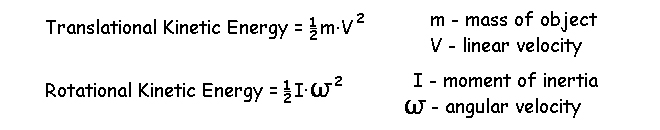
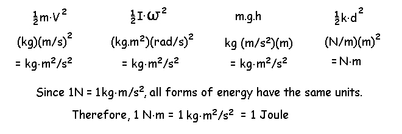

Introduction to Mechanical Energy
Energy can be defined as the ability to perform work. It is a kinetic variable that is very useful in the mechanics of human movement.
Types of Mechanical Energy
1) Kinetic Energy - the ability of a body to do work because it is moving.

2) Potential Energy - the ability of a body to do work because of its position above the ground or some reference point.
3) Strain Energy - the ability of a body to do work because of its tendancy to return to a non-deformed state.

Units: All forms of energy have the same units even though the formulae are different.

Since we used the units of N.m for a moment of force or torque, we use the units of Joules (J) for energy to avoid confusion.
We have only considered rigid bodies in the lectures so far so strain energy will be dealt with later. The total energy of a rigid object or body segment is calculated as the sum of kinetic and potential energy. As an object moves, its energy changes as its height and velocity changes. We can calculate its energy at any instant in time if we know the kinematics and inertial properties of the object. To calculate the total mechanical energy of a human body segment, we combine the kinematics and anthropometry that we learned in earlier lectures.
Example: Find the total mechanical energy of the leg segment given the following kinematics and body segment parameters.